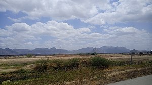
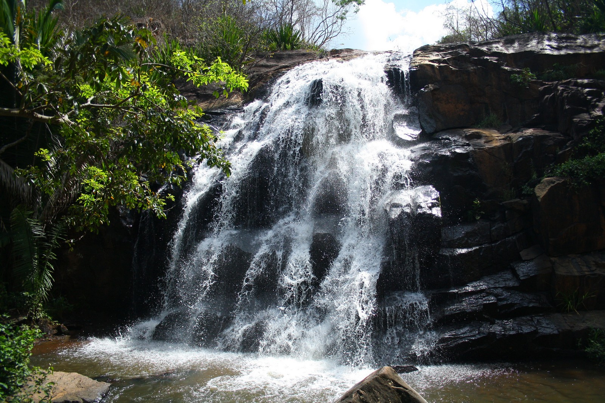
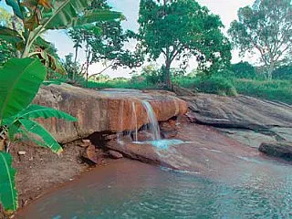

Informações técnicas sobre relevo, população, IDH etc.
| INFORMAÇÕES | |
|---|---|
| Municípios limítrofes | Massapê, Sobral e Alcântaras |
| Fundação | 13 de novembro de 1885 (135 anos) |
| Área total | 144,940 km² |
| Clima | Tropical Semiúmido |
| IDH | 0,638 — médio |
| PIB | R$ 35 643,903 mil |
| INFORMAÇÕES TERRITORIAIS | |
|---|---|
| Número de habitantes | 15 057 habitantes |
| Superfície de Meruoca |
14 984 hectares
149,84 km² |
| Densidade populacional | 100,5 ha./km² |
| Altitude de Meruoca | 717 metros de altitude |
| Coordenadas geográficas decimais |
Latitude:
-3.54634
Longitude: -40.4453 |
| Coordenadas geográficas sexagesimais | Latitude: 3° 32' 47'' Sul , Longitude: 40° 26' 43'' Oeste |
| INFORMAÇÕES DO MUNICÍPIO | |
|---|---|
| Endereço da Prefeitura Municipal de Meruoca |
Meruoca
Prefeitura de Meruoca
Av. Pedro Sampaio, 385 - Meruoca- CE, 62130-000 Brasil |
| Telefone da prefeitura |
(88) 3649-1136
Internacional: +55 88 3649-1136 |
| Fax |
(88) 3649-1219
Internacional: +55 88 3649-1219 |
| Endereço electrónicoda prefeitura |
Não Disponível
|
| Site oficial do município | meruoca.ce.gov.br |
| INFORMAÇÕES DO ADMINISTRATIVAS | ||
|---|---|---|
| Prefeito de Meruoca | José Herton Alves de Sousa | |
| Partido politico | PT | |
| INFORMAÇÕES DE TRANSPORTE | |
|---|---|
| Transporte urbano disponível | Não Disponível |
| Aeroporto |
Aeroporto de Sobral 19.2 km
Aeroporto Pinto Martins
83.6 km
Aeroporto Internacional Prefeito Dr.João Silva Filho
160.4 km
|
| INFORMAÇÕES DE DISTÂNCIA A OUTRAS CIDADES | ||
|---|---|---|
| São Paulo : 2324 km | Rio de Janeiro : 2175 km | Brasília : 1589 km |
| Salvador : 1070 km | Belo Horizonte : 1851 km | Manaus : 2177 km |
| Curitiba : 2613 km | Recife : 795 km | Goiânia : 1751 km |
| Belém :926 km | Porto Alegre : 3159 km | Guarulhos : 2304 km |
| Campinas : 2270 km | São Luís : 444 km mais perto | São Gonçalo : 2695 km |
| Distância calculada em linha reta! | ||
Conheça mais sobre a história da Meruoca.
O povoado de Meruoca teve sua fundação no recuado ano de 1727, quando foi iniciada a construção da capela de Nossa Senhora da Conceição. A capela recebeu o patrimônio de meia légua de terras na serra da Meruoca, doado pelo coronel Sebastião de Sá Barroso. Esse patrimônio só foi julgado, canonicamente, em 1767, pelo visitador José Teixeira de Azeredo.
Segundo Manoel Rodrigues, no livro Meruoca no Contexto Planetário, a povoação iniciou por volta de 1712 com a construção, coordenada pelo 1º cura, o jesuíta Pe. Miranda, do 1º oratório à N.S.da Conceição, no Sítio São José à margem do riacho, onde segundo a lenda foi encontrada uma imagem da santa que por diversas vezes foi retirada para colocar em outro nicho e misteriosamente voltava para o mesmo lugar.
A edificação foi de taipa coberta de palha e 15 anos depois, em 1727, com a doação de terras para formação do patrimônio (meia légua de terras com benfeitorias - plantios de cana-de-açúcar, café, arroz, trigo e fruteiras, um engenho e 100 cabeças de gado bovino), pelo sesmeiro Sebastião de Sá, iniciou-se a construção da igreja e a formação de ruas com casas; a maioria de palha.
A Serra da Meruoca foi entregue a vários membros que tinham a missão de produzir. O maior deles, Sebastião de Sá, tinha outras sesmarias na ribeira do Acaraú. A freguesia de Nossa Senhora da Conceição e o distrito foram criados em virtude da lei nº 1.799, de 10 de janeiro de 1879.
Instituída canonicamente por provisão de 4 de fevereiro de 1880, teve como primeiro vigário o padre Diogo José de Sousa Lima, que iniciou suas atividades, após tomar posse no cargo, a 29 de fevereiro de 1880. Elevado à categoria de vila com a denominação de Meruoca, pela lei provincial nº 2090, de 1311-1885, desmembrado de Sobral. Sede na povoação de Meruoca. Constituído do distrito sede. Instalado em 24-01-1887.
Pela lei nº 5, de 12-01-1893, é criado o distrito de Floresta e anexado ao município de Meuroca. Em divisão administrativa referente ao ano de 1911, o município é constituído de 2 distritos: Meruoca e Floresta.
Pela lei nº 1794, de 09-10-1920, é extinto o município de Meruoca, sendo seu território anexado ao município de Massapê, como simples distrito. Pelo decreto estadual nº 193, de 20-05-1931, o distrito de Meruoca volta a pertencer ao município de Sobral. Assim permanecendo em divisão territorial datada 1-VII-1950.
Elevado à categoria de município com a denominação de Meruoca, pela lei estadual nº 1153, de 22-11-1951, desmembrado de Sobral, sede no antigo distrito de Meruoca. Constituído de 2 distritos: Meruoca e Alcântaras. Desmembrado de Massapê. Instalado em 25-03-1955.
Em divisão territorial datada de 1-VII-1955, o município é constituído de 2 distritos: Meruoca e Alcântaras. Pela lei estadual nº 3961, de 10-12-1957, desmembra do município de Meruoca o distrito de Alcântaras. Elevado à categoria de município.Em divisão territorial datada de I-VII-1960, o município é constituído do distrito sede.
Saiba mais sobre os melhores lugares e o que fazer em Meruoca.
Serra da Meruoca
Serra da Meruoca é uma serra localizada no norte cearense nos municípios de Meruoca, Coreaú, Alcântaras, Massapê e Sobral. É um dos maciços residuais dispersos nas depressões sertanejas do interior cearense e possui uma vegetação em altas altitudes do tipo floresta subperenifólia tropical plúvio-nebular, ou mata úmida serrana, e em baixas altitudes do tipo floresta sub caducifólia espinhosa, ou mata seca.
Essa cachoeira tem esse nome porque quando a água cai forma uma névoa parecendo um véu de noiva. É uma lugar de deslumbrante beleza e o banho em suas águas é revigorante. Merece uma visita. 
Este local possui boa infraestrutura para receber os visitantes, com restaurante, pousada em um casarão colonial bastante aconchegante. Aqui você pode fazer trilhas ecológicas, tomar banho na bica que se origina de uma nascente de água (olho d’água) e nas piscinas naturais que se formaram ao seu redor. Possui Toboágua com mais de 12 metros de altura e que faz a alegria da criançada. Fica no sítio Bom Jesus na zona rural do município. 
Essa formação rochosa tem a base em formato de boca, daí o nome de ‘bocão’. É apropriada para a prática de rapel e escaladas.
Veja como chegar nos melhores pontos de Meruoca